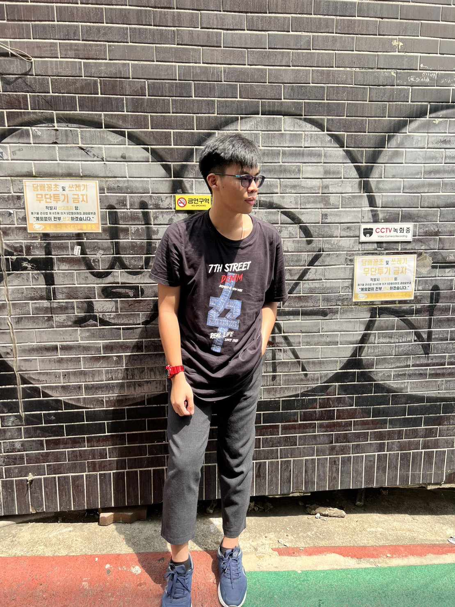

Thada Onsaeng

กระผม นายธาดา อ้นแสง ชื่อเล่นออกัส ปัจจุบันศึกษาอยู่ชั้นมัธยมศึกษาปีที่ 6 โรงเรียนสารสาสน์วิเทศสมุทรปราการ เว็บไซต์นี้จัดทำขึ้นเพื่อแสดงผลงานในระดับมัธยมศึกษา ทั้งนี้และเพื่อแสดงถึงความฝัน แรงบันดาลใจและจุดมุ่งหมายของผมทั้งนี้เชิญรับฟังครับ เเรงบันดาลใจที่ทำให้เกิดจุดมุ่งหมายทางการศึกษาในคณะวิทยาศาสตร์ สาขาวิทยาการคอมพิวเตอร์
อันเนื่องมาจากในช่วงเวลาที่ข้าพเจ้ายังศึกษาอยู่ในช่วงมัธยม ข้าพเจ้าได้ค้นพบว่าข้าพเจ้ามีความสนใจทางด้าน Cyber Security เหตุผลมาจากตัวข้าพเจ้าเป็นคนที่ชื่นชอบการเรียนรู้และใช้เทคโนโลยีคอมพิวเตอร์มาตั้งแต่ช่วงประถม และข้าพเจ้าได้รู้จักกับสิ่งต่างๆเกี่ยวกับคอมพิวเตอร์มากมายและได้ตระหนักถึงความอันตรายของโลกไซเบอร์ ซึ่งข้าพเจ้าคิดว่าคนในอายุเท่าข้าพเจ้าคงไม่มีใครคิดถึงภัยร้ายที่อาจจะซ่อนอยู่ในคอมพิวเตอร์ของเราตอนใหนก็ได้ซึ่งทำให้เรากังวลตลอดเวลา ด้วยเหตุนี้ข้าพเจ้าจึงอยากจะมุ่งเน้นในการศึกษาทาง Cyber Security เพื่อที่ข้าพเจ้าจะนำความรู้ที่ได้มาช่วยเหลือผู้อื่นและย้ำถึงความอันตรายของมัน ข้าพอยากเป็นอีกหนึ่งแรงผลักดันให้มีการศึกษาเรื่อง Cyber Security อย่างจริงจังในประเทศไทย และทุกๆท่านคงสงสัยว่า "แล้วคณะวิทยาศาสตร์ สาขาวิทยาการคอมพิวเตอร์ จะเกี่ยวอะไรกับสายงานนี้ ?" ข้าพเจ้าคิดว่ามีความเกี่ยวข้องและสำคัญอย่างมาก หากขาดสาขาวิทยาการคอมพิวเตอร์ไป ข้าพเจ้าคิดว่าตนเองควรมีเข้าใจถึงพื้นฐานโปรเเกรมเสียก่อนไม่อย่างงั้นข้าพเจ้าอาจจะไม่สามารถรู้ถึงจุดบกพร่องของโปรแกรมหรือเว็บไซต์ได้อย่างเต็มร้อยและในช่วงเวลามัธยมปลายข้าพเจ้าได้เริ่มศึกษาเกี่ยวกับการเขียน Code ให้กับหุ่นยนต์และได้รับหน้าที่ในการประกอบหุ่นยนต์และเรียนรู้ Programming Language พร้อมกัน และเพื่อให้ได้ประสบการณ์ที่มากขึ้นข้าพเจ้าได้ลงแข่งขันรายการแข่งหุ่นยนต์ และได้เป็นตัวแทนประเทศไทยไปแข่งที่ประเทศเกาหลี ข้าพเจ้าจึงได้ตัดสินใจอย่างแน่วแน่ในการเดินตามเส้นทางของ Cyber Security ตัวข้าพเจ้าได้ลองผิดลองถูก ได้รับประสบการณ์มากมายจากการแข่งขันต่างๆและได้รับความรู้จากการศึกษาหาความรู้ด้วยตนเองและจากอาจารย์ที่ฝึกสอนทุกท่าน ต่อจากนี้ข้าพเจ้าจะนำความรู้และประสบการณ์ที่ได้มาต่อยอดในสาขาวิทยาศาสตร์ สาขาวิทยาการคอมพิวเตอร์ และเพื่อต่อยอดสู่ความฝันในการเป็น Ethical Hacker และช่วยเหลือผู้ที่ไม่มีความรู้ทางด้านเทคโนโลยีไม่ให้ตกเป็นเหยื่อ ข้าพเจ้าเชื่อว่าข้าพเจ้ามีความสามารถเพื่อสร้างชื่อเสียงและภาพลักษณ์ให้กับมหาลัยได้ ดังนั้นข้าพเจ้าจะเป็นนักศึกษาที่ทุ่มเทแรงกายแรงใจ ความมุ่งมั่นเพื่อที่จะเติบโตเป็นบัณฑิตที่มีคุณภาพ และความสามารถ ต่อไปในอนาคต ช่วงเวลาที่คุณยอมแพ้ คือช่วงเวลาที่คุณปล่อยให้คนอื่นชนะ by Kobe Bryant